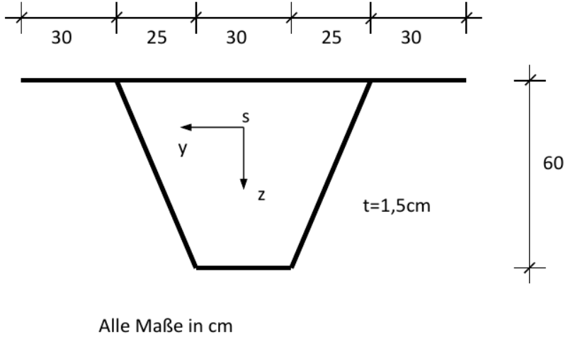

Sign of the internal forces
Sign of the internal forces Sign definitions of an element
Sign definitions of an elementOverview
Coordinate system and sign definitions
Example
Notes on the operation of the app
Designations
Default settings
Installation as an app on the desktop
Compatibility
Help: My keyboard has no minus key, virtual keyboard
With this web application, cross-section values and stresses of thin-walled cross-sections can be calculated. The centerline model (wire model) is applied and the finite element method is used for the solution [1], [2], [3]. The cross-section is described similarly to a beam or truss by several straight elements connected by nodes. The theory requires that each element must have at least one connection to another element. Thus, no elements may be "alone" in the cross section. This means that there must be a path from each element to all other elements. The node coordinates are entered in a ȳ-z̄ auxiliary coordinate system whose origin can be selected as desired. The elements have a start and end node and can accurately represent quadratic shear stress curves. Therefore, no refinement is required. The direction of the shear stresses is indicated by arrows in the quarter points of the elements on the right and left sides. If you look mentally from the element start to the element end, the right side of the element is at the right hand. Since the elements may have different material properties, reference values must be specified. These must also be used as material data in a member program if the calculated ideal cross-section values are used for a member cross-section. The normal stresses due to N, My and Mz are calculated with the usual formulas of mechanics assuming that the cross-sections remain plane according to Bernoulli. The shear stresses are positive if they act in the direction of the local coordinate system of the element. The positive local direction points from the initial to the final node of the element.
Features of the program:
The cross section can be asymmetrical, open and/or closed
Linear elastic material
The width of the elements is constant element by element
Each element has its own material properties
Calculation of all cross-section values
Stress calculation due to normal and shear forces N, Vy and
Vz,
Bending moments My and Mz,
primary and secondary torsion Mxp , Mxs
and camber moment Mω.
The cross-section is displayed in the y-z plane and in a 3D view. The shear stresses are drawn parallel to the
x-axis over the element thickness.
Sign of the internal forces
Sign definitions of an element
This example was treated in [2]. The cross-section data were automatically loaded at program startup.

Internal forces:
Mxp = 250 kNm; Mxs = 150 kNm; Mω = 10 kNm²
Vy = 1000 kN; Vz = 500 kN
Material:
E = 21.000 kN/cm²; ν = 0,3
The decimal separator is the comma or the point. A thousands separator is not permitted. In order to speed up the node and element input, individual cell values or rows of the tables can be copied or generated. A block can be selected by pressing the left mouse button. After releasing the mouse button a context menu appears. For touch screens: When entering with the finger or pen, the selection mode must first be activated by clicking the checkbox above a table. When crossing over with the finger or the pen, the selected cells are then highlighted in color, as with the mouse. After lifting the finger/pen the context menu appears. No values can be entered during the selection mode.
 Context menu
Context menu
For iOS, the selection is made in the context menu with a double click.
Note: A Bluetooth mouse and/or keyboard can be connected to any tablet or smartphone.
To make better use of the limited screen space on smartphones and tablets, the number of rows in the tables for node coordinates and elements are determined by entering the number of nodes and elements. Therefore, the new number of elements and nodes must be entered first and then the size of the tables must be changed using the 'resize tables' button. The process can be repeated as often as necessary.
The display options can be combined at will.
 Controls
Controls
Node incidences of the elements
nod1 = Node incidence at element start
nod2 = Node incidence at element end
Ageom = geometric cross-sectional area, area without consideration of material data.
Shear stresses from primary torsion Mxp:
τxs0,L = Shear stress from portion of open cross section, left side, linear progression over
element width
τxs0,R = Shear stress from portion of open cross section, right side
τxs1 = Shear stress from portion of closed cross section, constant over element width
Shear stresses from shear force and secondary torsion Mxs:
τxsa = Shear stress at the element start a
τxsm = Shear stress in element center m
τxse = Shear stress at the element end e, all stresses constant over element width
All other designations analogous.
In the ꔷꔷꔷ points menu, among other things, the unit of length can be set. The unit for the stress is adjusted: mm → N/mm² ; cm → kN/cm² ; m → MN/m² . The newly set unit is immediately transferred to the input page. Afterwards, a recalculation must still be performed so that the units of the results are adjusted. Furthermore, the font size and the table color can be set. The settings of the page can be saved as a presetting in the local memory of the used browser and are available again after a program restart. The presets can be deleted with the button below. The local storage is not a cookie. This web application performs all calculations on the local computer in the browser in JavaScript. No data is exchanged with a web server. Therefore, after starting the program, a network connection is no longer required.
The 'Wide browser window' option is only interesting for very wide screens and when the browser is operated in fullscreen mode. Then the output width of the application can be reduced. The area will be centered.
This application is programmed as a web application (Web App) so that it can be installed on the desktop under all operating systems. For this purpose, an icon is created on the desktop. This makes the app behave like an app installed from a store. DuennQs will still run in the installed browser, of course, but without controls such as the address bar. The installation process differs depending on the operating system, version, and browser. After duennQs has been started in the browser for the first time, on Android in the Chrome browser, select 'Install App' from the application menu (three-dot menu) at the top right. A dialog appears, which must be confirmed. After that, the browser can be closed. There is now a new icon on the desktop called DuennQs.
For installation on iOS, use the Safari browser. Here the command is called 'Go to Home Screen' with an add icon
The installation on Microsoft Windows is similar to the installation on Android. In the Edge browser, the
following section is in the application menu (three-dot menu)

With newer Chrome versions you may be asked directly if an installation is desired, see icon on the right
side of the address bar :

On macOS, the Microsoft Edge or Google Chrome browser is to be used for installation.
The Firefox browser does not support the installation at this time.
Under the PC operating systems Microsoft Windows and Linux, you can alternatively switch to full screen mode
with the F11 key.
Uninstallation is done by simply deleting the icon on the desktop.
The following operating systems were tested: Windows 10↑, macOS Catalina 10.15.7↑, Ubuntu 22.04↑, Android 9-13, iOS 15.7.3↑.
The following browsers were tested in the latest version: Chrome, Chromium, Edge, Safari, Firefox. Only the latest versions are tested and supported.
Problems: On Android Firefox the selection of cells in the tables does not work.
On some Android devices, especially from Samsung, the numeric keyboard does not include a key for a negative sign. Unfortunately, the HTML specification leaves it up to the device manufacturer whether the numeric keyboard contains a key for the negative sign. Judging from the many Internet entries, the deeper meaning behind this is probably only clear to a few people. In these cases, it is recommended to install an additional virtual keyboard. For example, the original Google Android keyboard Gboard from the Play Store is an alternative. The keyboard still has to be activated after the installation. It is best to do this right away in the Play Store. Later, you can always switch between the installed keyboards (icon at the bottom right of the keyboard).
[1] Matthias Kraus: Computerorientierte Berechnungsmethoden für beliebige Stabquerschnitte des Stahlbaus, Dissertation, Bochum 2005
[2] Matthias Kraus; Rolf Kindmann: Finite-Elemente-Methoden im Stahlbau, 2.Auflage, Ernst W. & Sohn Verlag, 2019
[3] Rolf Kindmann; Matthias Kraus : Steel Structures: Design using FEM, Ernst W. & Sohn Verlag, 2011